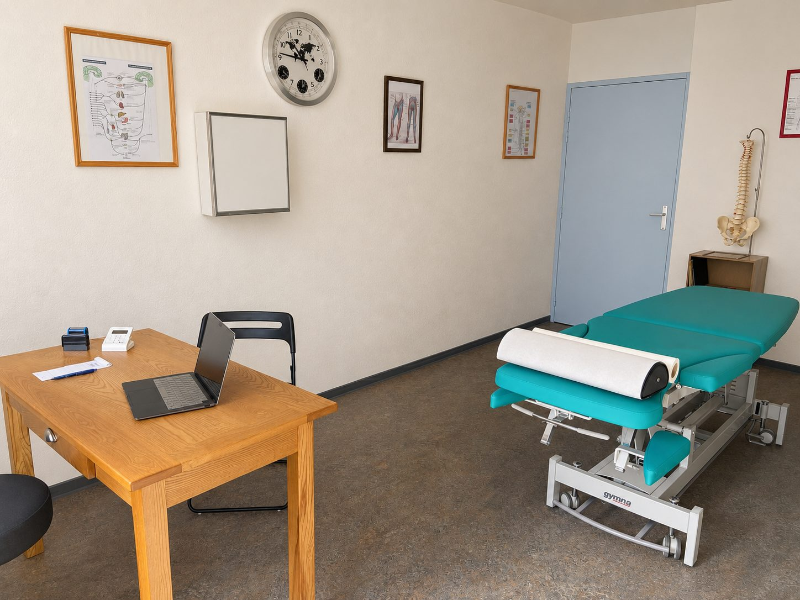
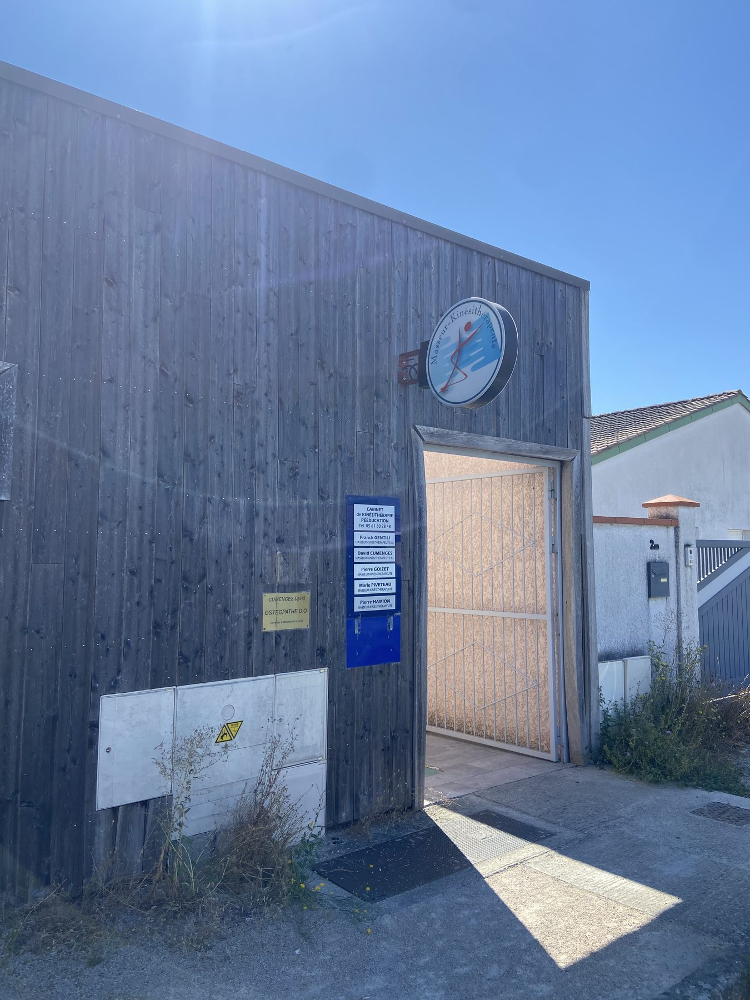

Ostéopathe à La Tour-du-Crieu, près de Pamiers
Du lundi au mercredi, au 2 ter chemin de la Galage. Rez-de-chaussée, accès PMR, stationnement sur place. Consultation à 55 €.

Venir au cabinet
- Adresse 2 ter chemin de la Galage, 09100 La Tour-du-Crieu
- Depuis Pamiers Environ 5 minutes en voiture
- Étage Rez-de-chaussée, accès PMR
- Stationnement Sur place, devant le cabinet
- Jours Lundi, mardi et mercredi
- Tarif 55 € la consultation, facture remise pour la mutuelle
Repérez bien l'entrée. Le cabinet occupe le bâtiment en bois situé le long du chemin de la Galage. Le stationnement se fait sur place, devant l'entrée.

Ostéopathe du club de rugby SCA Pamiers
Depuis 2024, j'accompagne les joueurs du SCA, le club de rugby de Pamiers, à l'entraînement comme en match.
Le rugby apprend à décider vite : reconnaître ce qui peut reprendre et ce qui doit s'arrêter, gérer l'aigu au bord du terrain, puis suivre les joueurs sur toute une saison. C'est une école exigeante, et elle profite à tous mes patients — car un lumbago au travail se raisonne exactement de la même manière qu'une lombalgie en troisième mi-temps.
Un cabinet pour la basse Ariège
La Tour-du-Crieu se trouve au cœur du bassin de Pamiers. Le cabinet accueille des patients de Pamiers, Varilhes, Verniolle, Saint-Jean-du-Falga et des communes alentour, sans avoir à monter jusqu'à Toulouse pour consulter.
Les douleurs peuvent apparaître dans de nombreuses situations du quotidien : travail physique, posture prolongée au bureau, reprise d'une activité sportive, déménagement ou encore long trajet en voiture. Ces contraintes répétées ou inhabituelles sont des motifs fréquents de consultation.
Où se situe exactement le cabinet ?
Au 2 ter chemin de la Galage, à La Tour-du-Crieu, dans le bâtiment en bois situé le long du chemin. Le stationnement se fait sur place, devant l'entrée.
Depuis Pamiers, combien de temps faut-il ?
Environ cinq minutes en voiture. Le cabinet est également à quelques minutes de Varilhes, Verniolle et Saint-Jean-du-Falga.
Vous suivez le SCA, faut-il être licencié pour consulter ?
Pas du tout. Le suivi du Sporting Club Appaméen est une activité en parallèle du cabinet, qui reste ouvert à tous : enfants, adultes, femmes enceintes, seniors, sportifs licenciés ou non.
Peut-on consulter rapidement à La Tour-du-Crieu ?
En pratique oui : une douleur aiguë trouve le plus souvent un rendez-vous sous 24 à 48 heures, du lundi au mercredi. C'est souvent plus rapide qu'en cherchant un ostéopathe à Pamiers même. Les créneaux disponibles apparaissent en direct sur Doctolib.
Quels jours consultez-vous en Ariège ?
Le lundi, le mardi et le mercredi. La fin de semaine, je consulte à Toulouse. Les créneaux disponibles sont visibles en direct sur Doctolib.
En fin de semaine, je consulte à Toulouse : voir le cabinet des Récollets.
Une douleur qui dure ? N'attendez pas qu'elle s'installe.
Choisissez votre cabinet et votre créneau en ligne pour prendre rendez-vous simplement, à Toulouse ou à La Tour-du-Crieu.